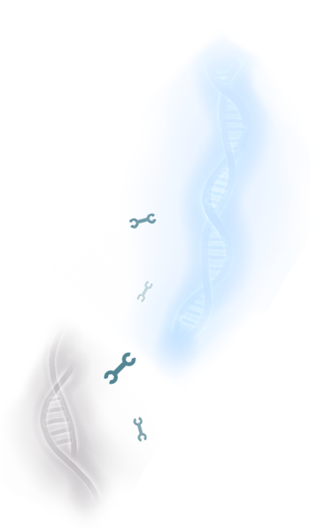

Hero.Coli is a single-player 2D top-down adventure game where the hero, a tiny
robot, has to explore a living world, collect and combine functional DNA fragments in order to engineer
and control the abilities of his bacterium companion.
During their adventure they will have to face obstacles and challenges with the help of synthetic biology.
Collect and craft DNA bricks to create your own abilities:
Explore an interactive living world at the scale of a cell:
Resolve realistic challenges and puzzles based on life science:
Discover and learn synthetic biology:
The emerging discipline of synthetic biology applies engineering principles and methodology
to biological systems. Synthetic biologists aim to extend or modify the behavior of biological organisms and
engineer them to perform controlled and reliable useful tasks.

The founders of the field applied the engineering strategy, based on standardization, decoupling,
hierarchization and abstraction to the sciences of life, in order to better understand and deal with the
complexity of biological systems, and make biology easier to engineer (Weiss et al., 1999; Weiss, 2001; Endy,
2005; Keasling, 2005). On this purpose synthetic biologists have been defining and compiling standard
biological parts, corresponding to DNA sequences with defined structure and function, called BioBricks™.
Using these standardized and well-characterized interchangeable biological devices, it is possible to build
synthetic complex networks, pathways and functions, in a programmatic fashion inspired by electrical
engineering.
Thus, over the past decade, synthetic biology has been improving the design and construction of
synthetic biological systems, and the re-design of existing ones for useful purposes. Nowadays this field holds
promising potential to offer technological tools that could be used to benefit society and meet current
scientific challenges: energy, biofuels, environmental issues, food production, materials, chemistry,
human health, pharmaceuticals, and many others.
Hero.Coli aims to promote the promise and potential benefits of synthetic biology, as well as to
warn the public about the risks and potential harms. This young interdisciplinary field has considerably grown
over the past few years and raises concerns about (anticipated or unanticipated) risks to the environment,
biodiversity, biosecurity, ethics, and health; nowadays it is crucial to raise awareness about these issues.
Therefore, we aim to promote intellectual responsibility and ethics education regarding the design and
engineering of living organisms.

Educational - Our goals are science outreach in synthetic biology and to design game challenges that
stimulate scientific creativity and interest. With Hero.Coli, we want to teach the basics of synthetic biology,
thanks to:
Simulation - The players should be allowed to experiment with a flexible and realistic crafting system
that uses BioBricks™. BioBricks™ is a standard for DNA interchangeable parts, developed with a view to building
biological systems in living cells. We developed a simulator that allows the player to:
Research - Generate a community of players interested in the field and
encourage them to:
Fun - We don't want Hero.Coli to be just a serious game. We want this game to provide fun with:
Make your own character - As you progress through the game, you will be able to collect and create
skills for you bacterium, thanks to the use of synthetic biology:

Play with devices - Corresponds to the easy difficulty mode and the
critical path of the game:

Play with BioBricks™ - Corresponds to the medium difficulty and allows
the players to access to new areas and rewards:
Create synergies between devices - Corresponds to the hard difficulty
mode and is required to fully complete the game:
This game project is currently under development by a small team at the CRI Paris:
Vincent AlexandrineDeveloper
Raphael GoujetLead developer
Ariel LindnerScience advisor
Here are a few lovely contributors that helped us developing this project:
Emilien SanterreDeveloper
If you wish to help us, by testing the game or contribute to the development, don't hesitate to
send us an email.
We are using the Unity game engine.
In order to create a scientifically accurate game, we first built the ReactionEngine, our modular homemade
simulator for:
Users can easily create files to add new BioBricks™, molecules or phenotypes to the game.
Our long-term objective is to provide a free web-based game and editing tools to the players.